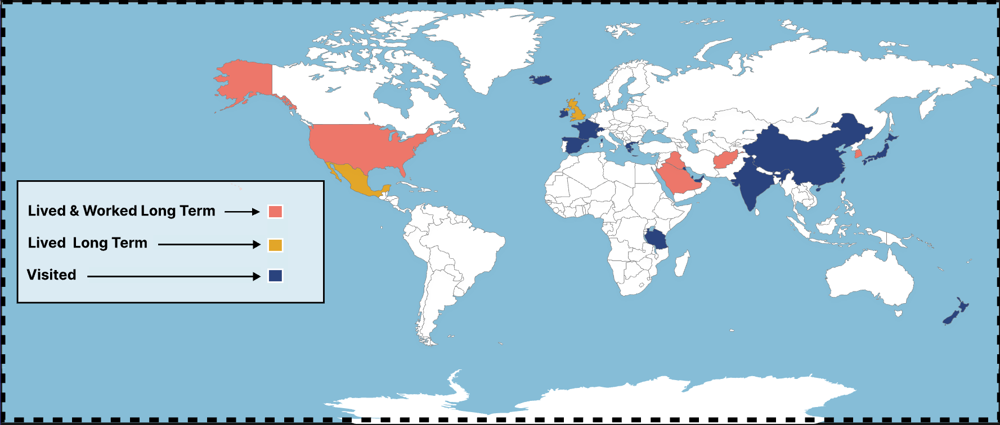

An International Perspective for Problem Solving
I enjoy organizing chaos. All brought about by over a decade of teaching and educational development from around the world.

What I'm Up to in 2026
Daily
- Running the same way on a bad day, as on a good day.
Nerd Hobbies
- Learning more about how knowledge management and instructional design principles help software development.
- Studying for the Security+ certification.
Nerd Work
- Using AI to learn from the mistakes of daily work.
- Searching for fewer manual steps.
- Organizing multi-agent pipelines for research, and compliance.
Things I Believe About Work
Accessibility Removes Barriers
| The Reader | What They Say | The Barrier | What It Actually Is |
|---|---|---|---|
| Busy Executive | "Give me the bottom line up front." | Severe time constraints and cognitive fatigue | An Accessibility Request |
| New Hire | "Where can I read how we do this?" | Critical processes are often learned over time and not documented | An Accessibility Request |
| Non-Technical Manager of Technical Team | "I don't want to get bogged down in big words and abbreviations, just tell me the story they're telling. | Too senior to ask basic information | An Accessibility Request |
Clear Documentation
- Documentation allows anyone to step into any role.
- AI only works well with clear documentation.
- Gatekeeping information is bad operational security.
AI at Work
- No Expertise & AI = Emotional Decision Making
- No Expertise & AI = Guessing the answer is correct.
- Generating information is free, comprehension is not.
How I Decide What to Do Next
Navigating Unstructured and Unpredictable Contexts

Decision Making Framework for Low-Resource Conditions

Explaining Complex Concepts Using Minimal Language and Visuals

Life Experience

Work Experience
AI & Data Systems
Global Education & Instructional Design
Education & Certifications
Current Projects
Automation: IERhub.com
APR 2026 – Present
A licensed Texas continuing education provider, with its first customer in July 2026. Built and run end to end via automation. Course production runs through a curriculum development pipeline that has five stages, each with human in the loop review, and six validation programs that block on failure. The result is compliance-ready training for the Texas Dept. of Licensing & Regulation.
Augmented, not artificial
Instructional design expertise gets augmented so that a single person can complete the work of an entire team.
Stages and Gates
Upfront planning reduces tech debt, while frequent human reviews and systematic error logging prevent repeat mistakes.
Fact Checking
A hybrid RAG system and adversarial judge verify every claim against the source text. Unsupported or contradicted claims immediately block the build instead of issuing warnings.
WriteTrace - Chrome Extension

MAR 2026 – APR 2026
A Chrome Extension that captures and replays the writing journey, integrating real-time document analysis with a scalable serverless backend and freemium subscription model.
Privacy-first & compliant
FERPA/GDPR evaluated. Document processing happens locally in-browser with secure access control via HTTPS callable Cloud Functions.
Timeline analytics & export
Real-time playback of document revisions with timeline scrubbing, generating highly compressed offline HTML/GIF exports.
Author forensics
Leverages Google OAuth integration to identify precise contributors, surfacing shadow ghostwriters and tracking group work equity.
Revision density
Monitors deletion rates using diff-matching algorithms; human writing averages 15-25%, while <5% suggests pre-generated drafts.
Session continuity
Uses OT API metadata to detect session gaps and discrepancies between document growth and active browser tab usage time.
Velocity & bursts
Flags instantaneous bursts and inhuman sustained speeds (>120 WPM) that indicate external copy-pasting or AI generation.
Web Application - GovConMaker.com

2024 – APR 2026
Find the right RFPs
AI-powered contract discovery tailored to a company's capabilities.
Generate compliant documents
Capability statements and summaries instantly aligned to work requirements.
Write faster proposals
Turns RFPs into structured drafts in minutes.